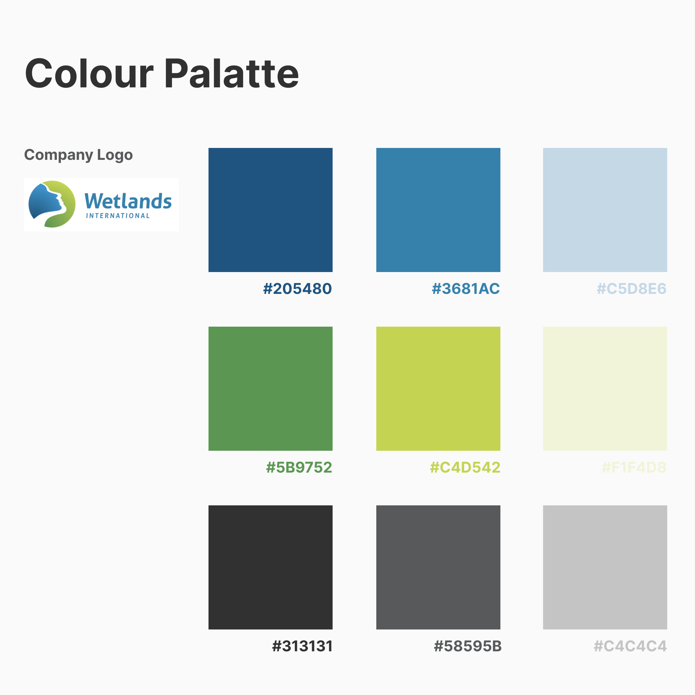
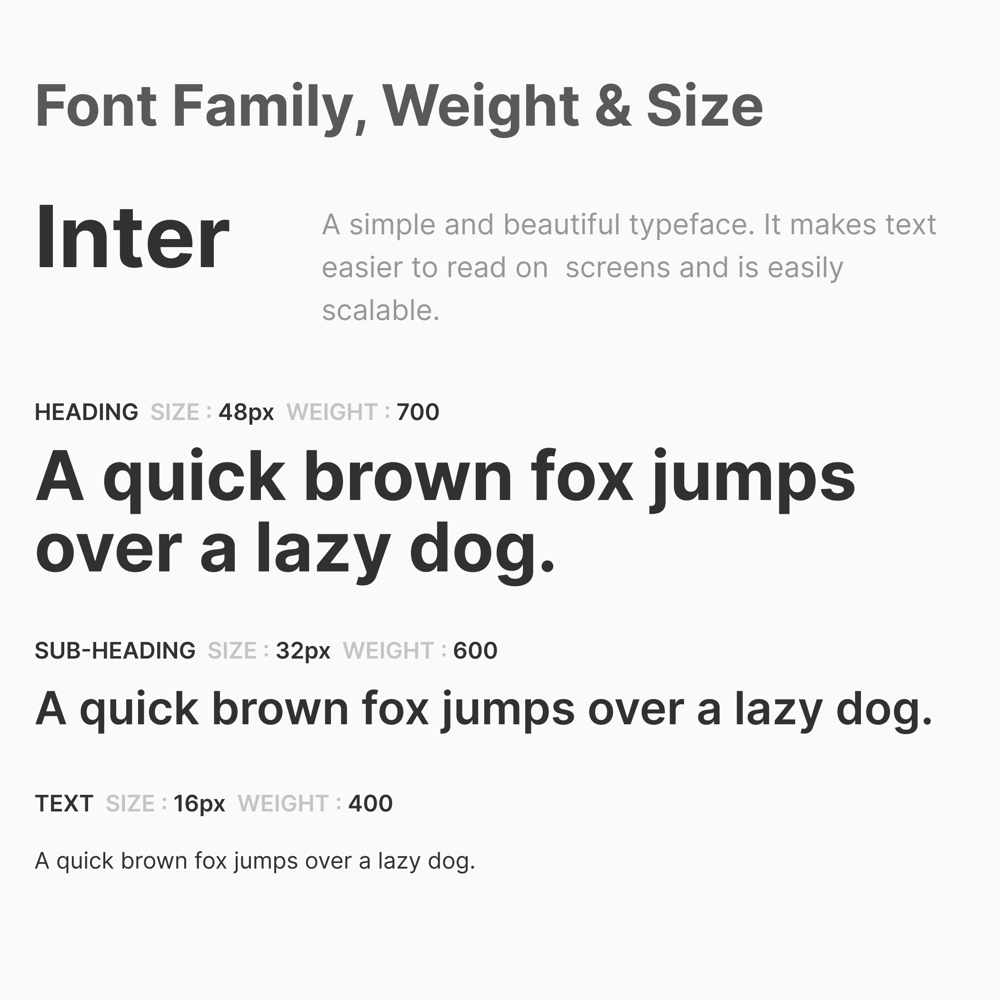
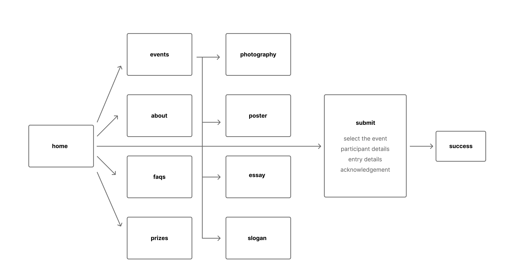
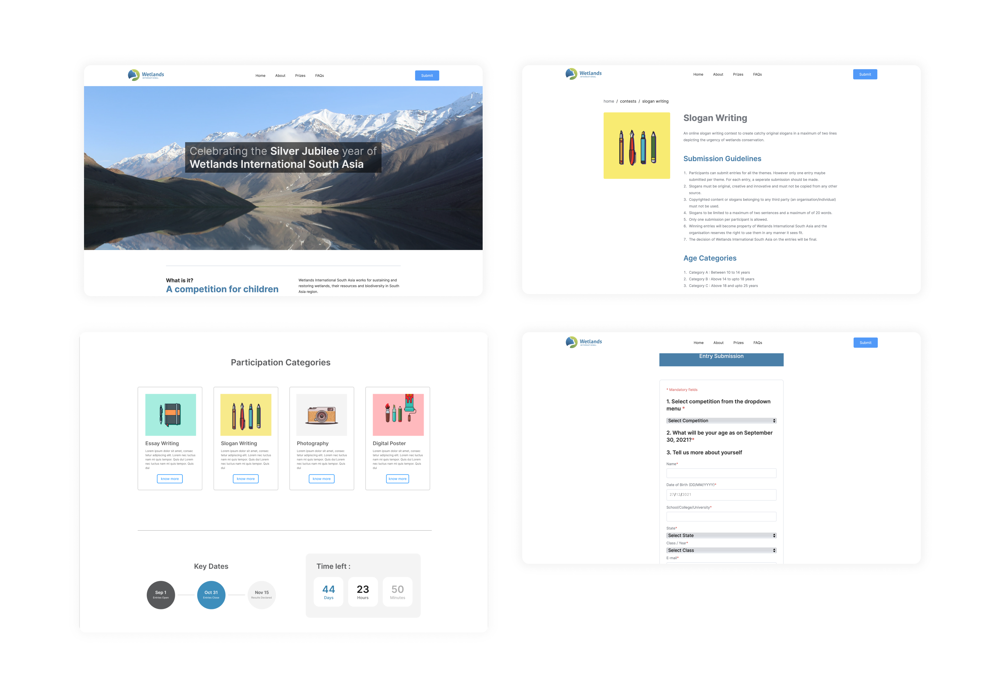

Wetlands International South Asia
Overview
Wetlands International is a global organisation focusing on sustaining
and restoring wetlands, their resources and biodiversity. Their
South-Asian office located in New Delhi, India was celebrating its
Silver Jubilee in the year 2021. To celebrate the occasion, they
wanted to organise a national competition for children and teenagers.
I worked as an intern at Wetlands International South Asia for a
duration to design and develop a portal for the competition. The
project is live at
www.wetlands25.org
Role
UI Designer
Duration
2 months
Tools & Technologies
Figma, Illustrator
HTML, CSS & JavaScript
HTML, CSS & JavaScript
Team
Prakhar Prasad
Abhin Rustagi
Abhin Rustagi
Step 1: Setting up Design Guidelines


I began my work by establishing design guidelines, specifically the
colour palette and the typeface. For the colour palette, I was asked
to continue with the company’s colour schemes and palette. For the
typeface, I chose Inter, a clean and minimal Sans-Serif typeface,
offering excellent readability.
Step 2: Crafting the flow

The next step was creating a user flow. I wanted the website to be
user friendly and intuitive. On the landing page, I added a CTA for
Submission and also links for all the other important sections. Each
event was allocated separate which helped in containing an overflow of
information for the user. All the sub-pages had detailed breadcrumbs
to help the user navigate through the website easily.
Step 3: Designing the interface
Now with all the base-work done, I had to design the interface. The
supervisors overlooking the project asked me to keep it minimal and
clean. So, for the landing page, I opted for a beautiful photograph of
an Indian wetland, which offered striking colours and also did justice
to the organisation’s goal and area of service. All the sections were
designed with the main purpose of creating a smooth and seamless
experience.

The illustrations for the events were chosen keeping in mind the
target audience and the nature of the event. To restrict an overflow
of information, the FAQ section was designed as an accordion. Some
micro-interacrtions were added to make it seem interactive and fun.
Text bodies through the website were restricted to certain width with
sufficient white space to make it readable and to prevent the user
from getting tired.
Step 4: Development
For the development part, I coded the front-end using HTML5, CSS3 and
some vanilla JavaScript, while my team-mate and good friend,
Abhin Rustagi worked on the
back-end, form handling and database management. Overall the
development of the website took 2 weeks and the submission process was
tested thoroughly before going live with the project.
Back to home